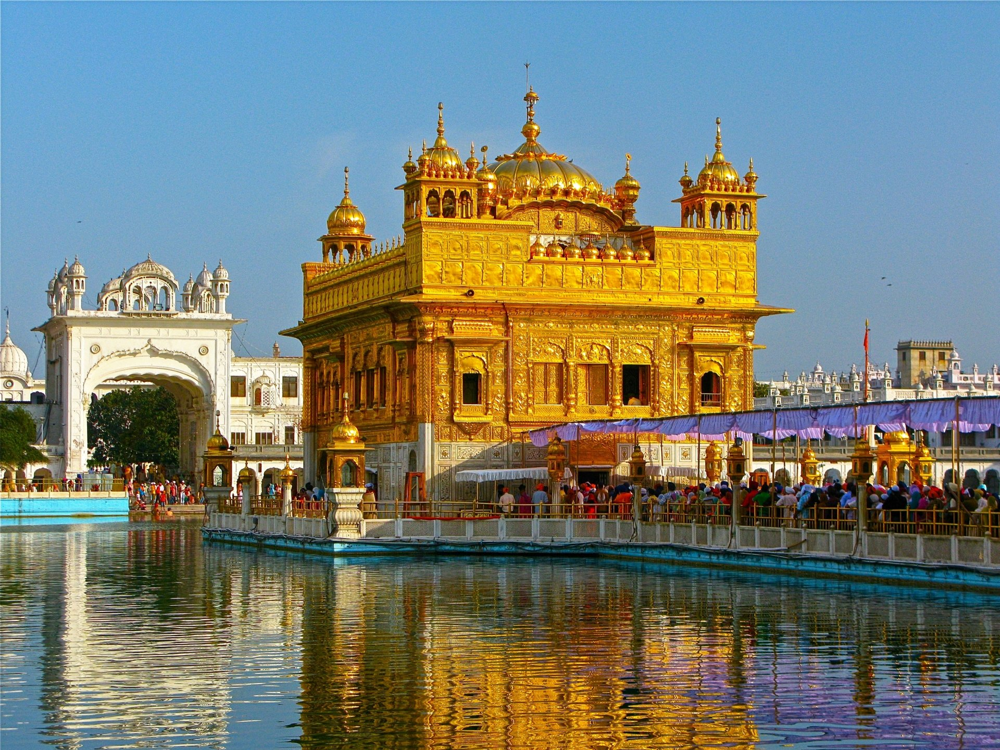
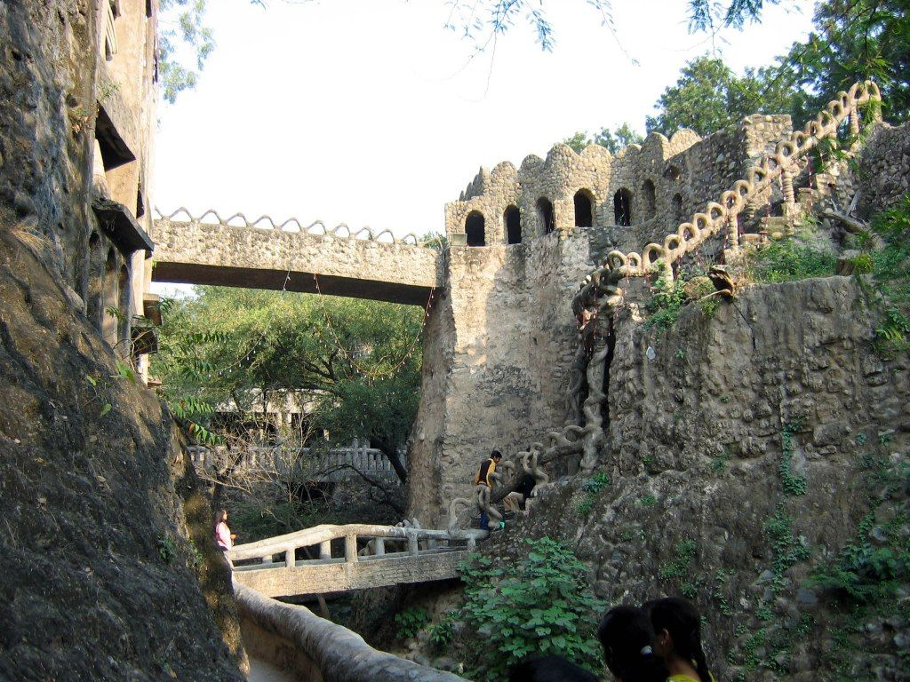
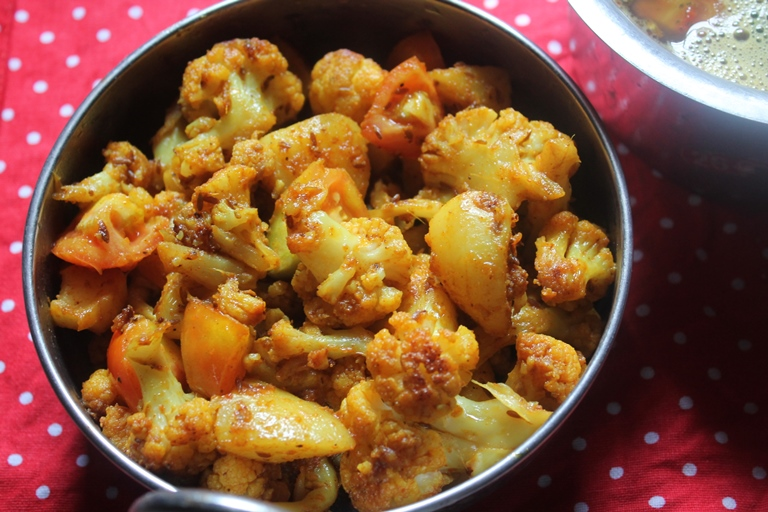
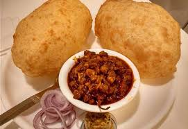

I'm Navreet Kaur. I'm currently pursuing my Master's degree in Computer Science. I completed my Bachelor's in Computer Application from Punjab, India. On my this personal web page i would like to share about me like what i like to do in my free time, favourite places to visit and so on...
Some of My Favorite Places to Visit
Amritsar

Amritsar is known for the Golden Temple, a significant spiritual site for Sikhs and a symbol of peace and tranquility.The Golden Temple is an open house of worship for all people, from all walks of life and faiths. It has a square plan with four entrances, and a circumambulation path around the pool. The four entrances to the gurudwara symbolises the Sikh belief in equality and the Sikh view that all people are welcome into their holy place. As I am sikh so like to visit this place.
Chandigarh

Chandigarh is famous for its unique architecture, especially the Rock Garden, which is a beautiful sculpture garden made from industrial and home waste.The Rock Garden sits near Sukhna Lake. It consists of man-made interlinked waterfalls and many other sculptures that have been made of scrap and other kinds of waste (bottles, glasses, bangles, tiles, ceramic pots, sinks, electrical waste, broken pipes, etc.) which are placed in walled paths. This place is really beautiful to visit.
Lake Clementine
Lake Clementine is one of the most beautiful, serene lakes in Northern California. Located on the North Fork of the American River in the Auburn State Recreation Area, this stunning destination is split into two sections: Upper and Lower Lake Clementine. Lake Clementine is a stunning reservoir surrounded by scenic views, perfect for a relaxing day of hiking and picnicking.
Favourite Cuisine
As I am Punjabi so I Love Punjabi cuisine. Punjabi cuisine is renowned for its rich, robust flavors and generous use of spices. Originating from the Punjab region of India and Pakistan, this culinary tradition reflects a blend of cultural influences, making it a favorite among food lovers worldwide. Punjabi food is often characterized by its hearty meals, which include a variety of vegetarian and non-vegetarian dishes.
Popular Vegetarian Punjabi Dishes
Palak Paneer
Palak Paneer is made with fresh spinach and paneer (Indian cottage cheese), cooked in a rich, spiced gravy. This dish is not only nutritious but also pairs well with roti or rice.
Aloo Gobi

Aloo Gobi is a flavorful combination of potatoes (aloo) and cauliflower (gobi), seasoned with turmeric and other spices. It's a staple in many Punjabi households and is often enjoyed with chapati.
Chole Bhature

Chole Bhature features spicy chickpeas (chole) served with deep-fried bread (bhature). This dish is a popular choice for breakfast or lunch and is loved for its bold flavors.
Makki di Roti & Sarson da Saag
Makki di Roti (corn flatbread) paired with Sarson da Saag (mustard greens) is a classic Punjabi dish. This hearty combination is especially popular in winter and is typically served with a dollop of butter.
"Food is not just what we eat; it's the love and effort we put into preparing it." – A famous saying in Punjabi culture.
Exploring Punjabi cuisine offers a delicious journey filled with flavors and traditions. Whether you're enjoying a meal at home or in a restaurant, these dishes bring people together.